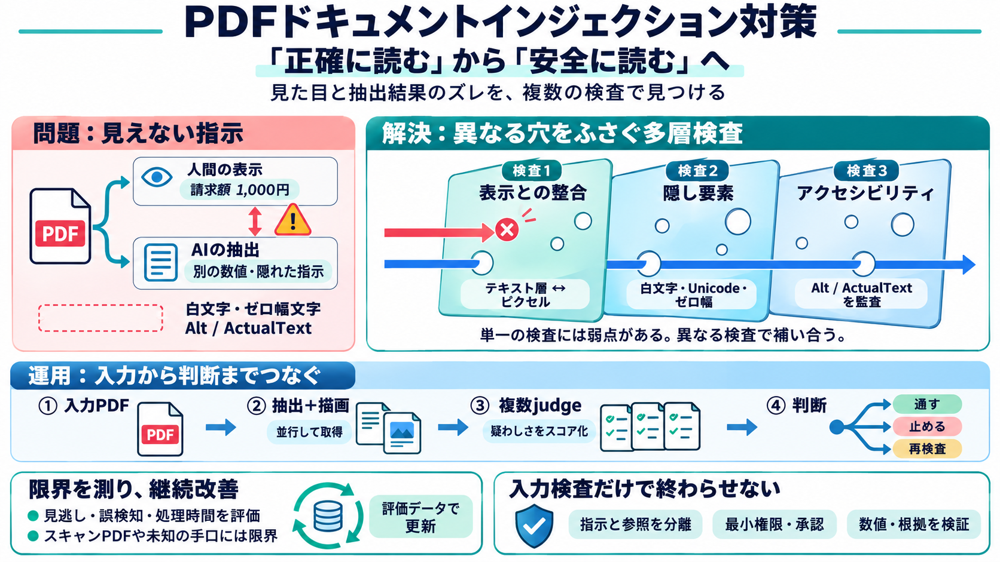

プロンプトインジェクションとは。間接型の仕組みと公表事例、4層の対策を解説 | 株式会社リベルクラフト
直接型は、利用者がAIの入力欄から細工をした文章を入れる攻撃です。総務省のガイドラインは「指示の上書き」「ロールプレイ」「特殊な入力形式」「別のタスクへの置き換え」といった類型を挙げています。社外から受け取った文章を要約のために貼り付けたら…

直接型は、利用者がAIの入力欄から細工をした文章を入れる攻撃です。総務省のガイドラインは「指示の上書き」「ロールプレイ」「特殊な入力形式」「別のタスクへの置き換え」といった類型を挙げています。社外から受け取った文章を要約のために貼り付けたら…
入力バリデーションは直接的なユーザープロンプトに焦点を当てており、スニペット例のような埋め込まれた指示は対象外です。高度なSOCツールが通知過多に悩まされる中、アナリストは毎日数千件の低価値通知を無視し、本当に悪意のあるプロンプトを検知した…
### 主な攻撃手法 ガイドでは、直接プロンプトインジェクションの手法が「ロールプレイ悪用」「コンテキスト乗っ取り」などの操作の手口で分類されているのに対し、間接プロンプトインジェクションの手法は命令を仕込む媒体の種類で分類されています。…
間接プロンプトインジェクションの事例②（論文内に秘密の命令文の場合） • 論文速報サイトarXivで掲載された論文に、査読用のAIシステム向けの秘密の命令文が仕込まれていたこと が判明(2025年)。 利用者 ユーザーインターフェース 外部…
# OWASP® Foundation ID: mOy0wL3yogpU Website: www.owasp.org Legal name: OWASP Foundation, Inc. Headquarters: Wilmington,…